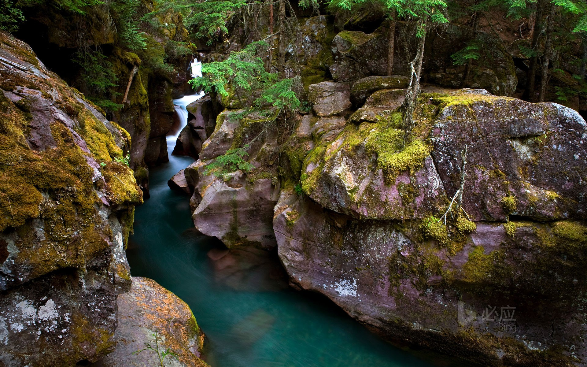
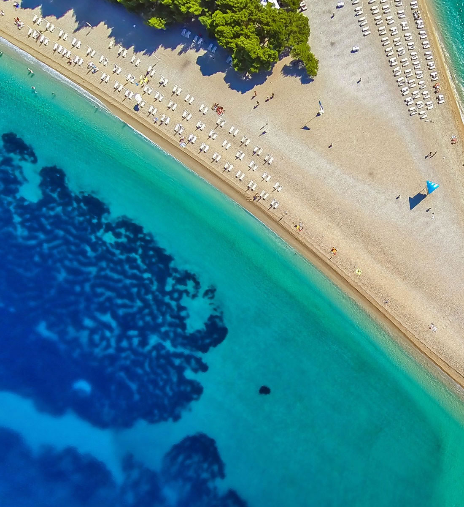
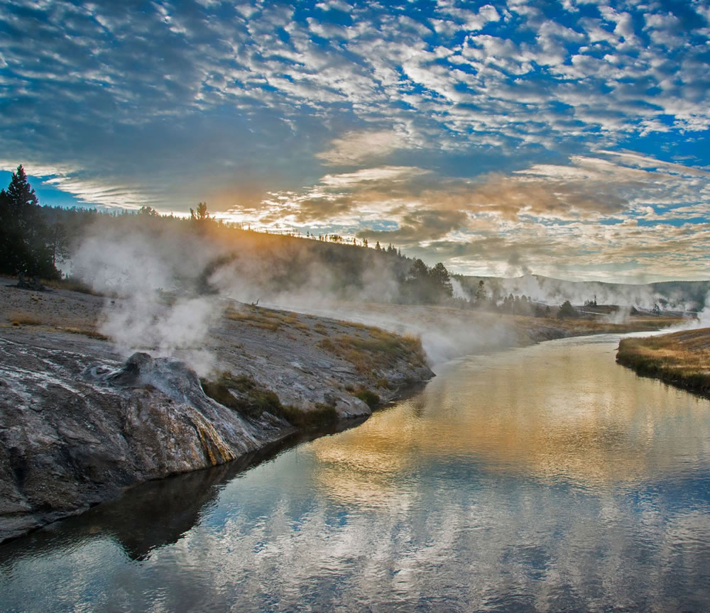
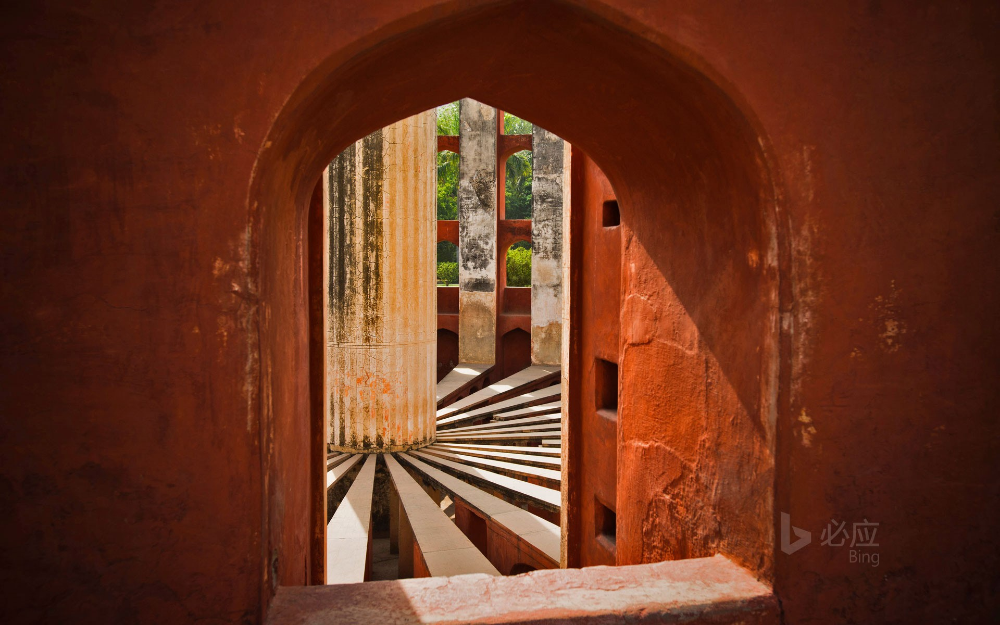
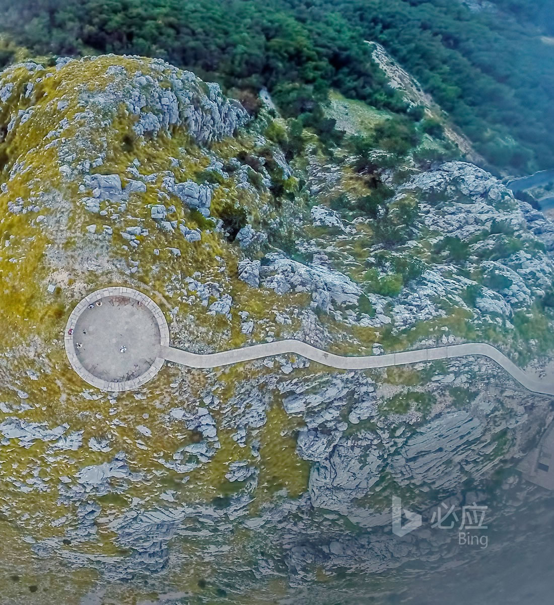
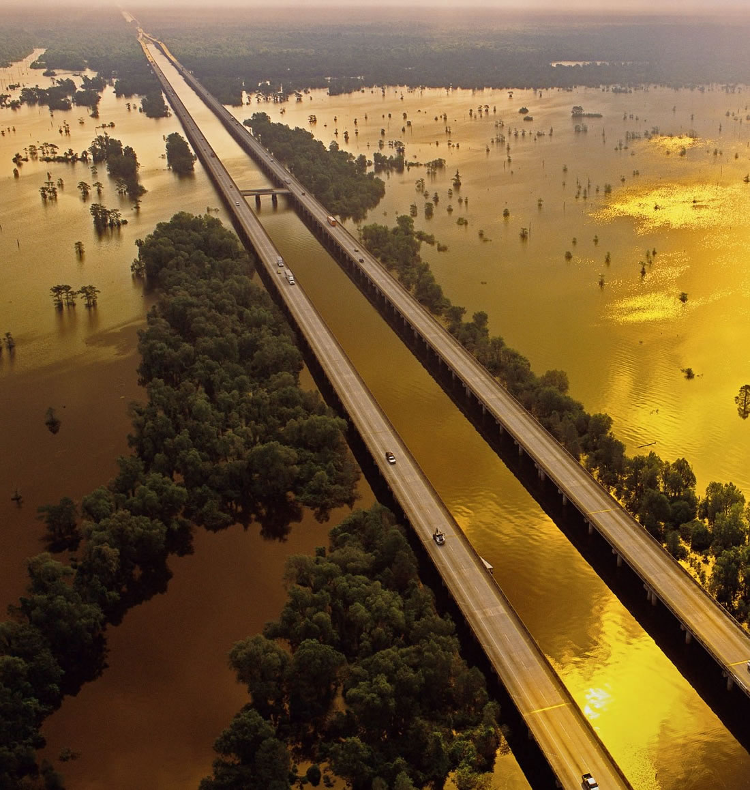

美如画卷的蒙大拿州
位于美国西北部的蒙大拿州拥有100万英亩的崎岖不平的荒野，更有着令人向往的冰川国家公园，徒步观赏冰山的同时，你会看到一面异常清澈的湖水，这就是冰川国家公园里著名的“雪崩溪”。沿着湖边有非常人性化的步道，方便人们徒步的同时可以更近距离的真实接触雪崩湖。

文艺之都
这个被绿松石冲浪环绕的白色卵石海滩是加勒比海地区的一个温暖热带地区，又名尖角海滩。这是一个很受欢迎的度假地点，这里得天独厚的地理条件引来很多人在这里冲浪。如果你对海滩不感兴趣，这里还有地中海布拉奇岛郁郁葱葱的松树林和小渔村等待你的探索。

黄石公园的油画感
沿着美国怀俄明州西北部的火洞河的路线，你可以参观到黄石国家公园内的一些主要的间歇泉盆地，其中包括老忠实间歇泉。由于河上四处都在冒烟，所以被当年的探险者称为火洞河。这条21英里长的河流还被称为是全国最好的钓鱼景点之一。

那些古老神秘的天文台
古老的简塔·曼塔天文台位于印度拉贾斯坦邦的斋浦尔，这里的居民有着最最值得炫耀的一件物品——世界上最大的日晷。它是构成简塔·曼塔天文台的19个大型天文设备之一。这个建筑群还包括一个巨大的、可移动的天空图。简塔·曼塔天文台是由萨瓦伊·杰伊·辛格二世在18世纪时建造的。

琳琅满目的山和海
洛夫琴山国家公园内有一个非常宏伟的纪念碑，里面放着的是19世纪的哲学家和诗人Njegoš的遗体，他的史诗诗歌对黑山和塞尔维亚的文学产生了深远的影响。他统治过黑山一段时间，希望将塞尔维亚人团结在巴尔干地区。人们对他的政治和宗教领袖的崇敬，就像对他的文学一样

走出炎热
也许炎热的夏天已经足够让你烦躁，当你的燥热到达极点的时候，就是处暑来临的时候。秋天终于带来一丝怡人的清凉，你看，在路易斯安那州阿查法拉亚盆地桥两边，那些郁郁葱葱的树木似乎也厌倦了夏日的狂热，深绿的叶子也开始发黄，这种黄绿的渐变真可谓是世界上最美的色彩！